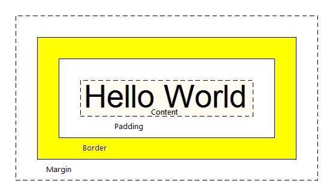

Box Model
It consists of: actual content, padding, borders aand margins. The image below illustrates the box model:

Content - The content of the box, where text and images appear
Padding - Clears an area around the content. The padding is transparent
Border - A border that goes around the padding and content
Margin - Clears an area outside the border. The margin is transparent

total height: height+top/bottom padding + top/bottom margin_ top / bottom border
Hi this is use of margin and padding. We can also set as margin-top, margin-bottom, margin-left, margin-right. Same with padding
Border
Border Box : the content width and height include content+ padding+border